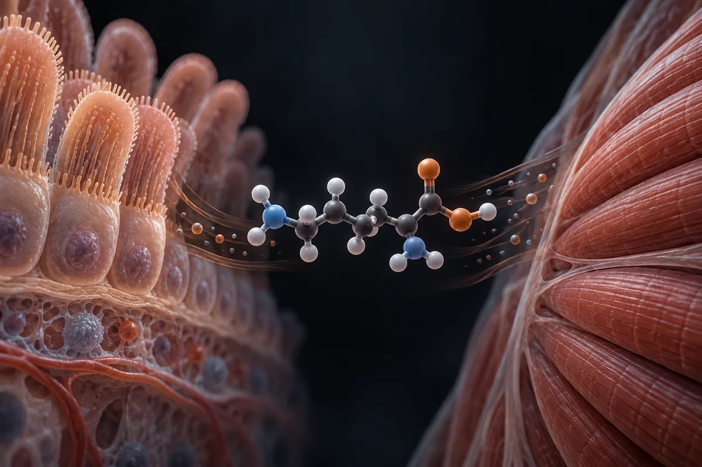

L-glutamina e hormônio do crescimento
O estudo de 1995 existe: 9 pessoas, 2 g num refrigerante, sem bebida placebo; o resumo diz só que o GH estava "elevado" aos 90 minutos, e o efeito nunca virou músculo em quem treina.

Material experimental. Leia antes de usar qualquer coisa daqui.
Nada nesta página é recomendação médica, prescrição ou plano de tratamento. É uma tradução organizada de protocolos que circulam em comunidades de pesquisa e, quando existe, do que ensaios publicados testaram. As duas coisas estão marcadas de forma diferente — e não são equivalentes.
A maior parte dos compostos aqui não tem aprovação da ANVISA nem da FDA para uso humano. Vários são vendidos com rótulo de "uso exclusivo em pesquisa", o que significa que não passaram por controle de pureza, esterilidade ou dosagem para consumo por pessoas. Dose descrita por comunidade não é dose validada: é o que alguém relatou ter feito.
Converse com um profissional de saúde habilitado antes de considerar qualquer um destes compostos. Se você já usa algum e sentir algo fora do previsto, procure atendimento — não espere o próximo exame de rotina.
Resumo
O estudo citado é real: em 1995, 9 voluntários saudáveis tomaram 2 g de glutamina num refrigerante de cola, 45 minutos depois de um café da manhã leve, e aos 90 minutos o GH e o bicarbonato estavam mais altos que numa medida feita uma semana antes. O resumo não traz "4 vezes", "400%" nem faixa de idade, e não consegui abrir o texto completo. Não achei repetição com glutamina sozinha. Com mais glutamina e por semanas, o treino de força não rendeu mais, e a dose de bicarbonato da glutamina não mudou o desempenho num teste de esforço máximo. No Brasil, o máximo em suplemento é 5 g por dia.
Por que esta página existe
A L-glutamina aparece descrita em vídeos curtos sobre saúde masculina que vi publicados na internet, como o aminoácido "de prateleira de farmácia" que, com 2 g, "multiplicou o GH por 4 vezes em 90 minutos", "quase 400% acima do valor basal". Os vídeos citam um estudo do American Journal of Clinical Nutrition de 1995 e acrescentam três detalhes: o bicarbonato do sangue também subiu, o que daria "mais tempo até você queimar" no treino; o efeito foi igual em voluntários de 32 a 64 anos; e há "uma janela específica em relação à última refeição" que separaria quem sente o pico de quem "só tomou glutamina por tomar".
Levantei as alegações de 2 vídeos curtos (o texto falado é quase idêntico nos dois), separei as 10 verificáveis e fui atrás do estudo citado. A evidência sobre este tema é rala: um estudo de 9 pessoas, sem repetição com glutamina sozinha que eu tenha achado. Por isso esta página é mais curta que outras da série. Nenhum número desta página veio da fonte secundária do site.
Este site trata de assunto vizinho também em O eixo do GH fora do frasco de peptídeo e Niacina (ácido nicotínico) e hormônio do crescimento.
O que é
- Identidade. A L-glutamina é o aminoácido mais abundante do sangue. O corpo a fabrica; ela não é essencial na dieta de quem está saudável.
- O estudo dos vídeos é o de Welbourne, da Universidade Estadual da Louisiana, publicado em 1995. Segundo o resumo, 9 pessoas saudáveis tomaram 2 g de glutamina dissolvidos num refrigerante de cola, bebidos em 20 minutos, 45 minutos depois de um café da manhã leve. O sangue foi colhido no início e a cada 30 minutos por 90 minutos, e comparado com medidas feitas nos mesmos horários uma semana antes. Em 8 das 9 pessoas, a glutamina do sangue subiu aos 30 e 60 minutos e voltou ao normal aos 90. Aos 90 minutos, o bicarbonato e o GH estavam "elevados".
- O que o resumo não traz: nenhum valor de GH, nenhum "4 vezes" ou "400%", nenhuma idade dos voluntários e nenhuma análise por idade. Tentei abrir o texto completo pela editora e pelo navegador; o site bloqueou com verificação anti-robô, e eu não a contornei. Os números dos vídeos podem estar no texto completo; não consegui conferir.
O mecanismo: o bicarbonato vem do rim, e o GH sobe em pulsos
O próprio autor voltou ao tema em 1998, agora com um controle de verdade: o mesmo refrigerante diet sem glutamina (Welbourne 1998). Com 2 g de glutamina, o equivalente a 28 mg por kg, o bicarbonato do sangue passou de 25,4 para 27,9 mmol/L; com o refrigerante sozinho, não subiu. A conclusão dos autores descarta a glutamina como matéria-prima direta do bicarbonato: o rim passou a eliminar mais ácido e a filtrar mais. É um efeito real, pequeno e medido em repouso.
Sobre o GH, o ponto que pesa contra uma medida única é a fisiologia. Segundo a revisão de Veldhuis e colegas (2001), o GH é secretado "em pulsos", com uma secreção basal baixa entre eles. Um valor colhido aos 90 minutos pode cair dentro ou fora de um pulso. A revisão de Caputo e colegas (2021) lista o que muda a resposta do GH a aminoácidos: treino, sexo, dieta, tempo desde a última refeição e idade. É por isso que estudos de GH costumam colher muitas amostras e ter um grupo placebo no mesmo dia; o resumo de 1995 descreve controles de uma semana antes, e não diz se eles tomaram a mesma bebida sem glutamina.
Quanta evidência existe, de verdade
Os números abaixo foram levantados por mim em 16 de outubro de 2026, no PubMed e no ClinicalTrials.gov. A consulta de cada linha está ao lado do número, para qualquer pessoa repetir e me contradizer.
| Base | Consulta | Resultado |
|---|---|---|
| PubMed | glutamine[Title/Abstract] AND "growth hormone"[Title/Abstract] | 265 artigos |
| PubMed | glutamine[Title/Abstract] AND "growth hormone"[Title/Abstract] AND (oral[Title/Abstract] OR ingestion[Title/Abstract] OR supplementation[Title/Abstract]) AND humans[MeSH Terms] | 42 artigos |
| PubMed | glutamine[Title/Abstract] AND "growth hormone"[Title/Abstract] AND (oral[Title/Abstract] OR ingestion[Title/Abstract] OR supplementation[Title/Abstract]) AND humans[MeSH Terms] AND (Randomized Controlled Trial[Publication Type] OR Meta-Analysis[Publication Type]) | 13 artigos |
| PubMed | glutamine[Title/Abstract] AND supplementation[Title/Abstract] AND (exercise[Title/Abstract] OR athletes[Title/Abstract] OR "resistance training"[Title/Abstract]) | 214 artigos |
| PubMed | glutamine[Title/Abstract] AND supplementation[Title/Abstract] AND (exercise[Title/Abstract] OR athletes[Title/Abstract] OR "resistance training"[Title/Abstract]) AND (Randomized Controlled Trial[Publication Type] OR Meta-Analysis[Publication Type]) | 52 artigos |
| ClinicalTrials.gov | intervenção: glutamine | 298 estudos registrados |
| ClinicalTrials.gov | intervenção: (glutamine) AND AREA[Phase]PHASE3 | 45 ensaios de fase 3 |
| ClinicalTrials.gov | termo livre (não intervenção): glutamine AND "growth hormone" | 5 estudos registrados |
Leitura honesta desses números
- "Glutamina e GH" no PubMed quase sempre é GH como remédio, junto com glutamina. Dos 13 ensaios randomizados da terceira linha, a maioria dá hormônio do crescimento injetado com glutamina a pacientes com intestino curto, queimados ou em UTI. Só um mediu o GH depois de tomar glutamina por boca, e numa mistura com glicina e niacina (Arwert 2003).
- O estudo de 1995 não está entre os ensaios randomizados: o PubMed o classifica como "Clinical Trial". Não localizei nenhuma repetição com glutamina sozinha medindo GH.
- Os 45 registros de fase 3 são de doença: UTI, cirurgia, câncer, intestino. Registro não é resultado.
- Contagem de artigo mede atenção acadêmica, não evidência de desfecho.
Os estudos que sustentam as alegações
Segundo o PubMed, estes são os trabalhos concretos por trás do que se diz sobre glutamina, GH e treino. Leia o que cada um mediu, e em quantas pessoas.
| Estudo | N | Contexto | O que relatou | Ressalva |
|---|---|---|---|---|
| Welbourne, 1995 Am J Clin Nutr 61(5):1058-61 · PMID 7733028 | 9 | Saudáveis; 2 g de glutamina num refrigerante de cola, 45 min após café da manhã leve; sangue até 90 min | Aos 90 min, bicarbonato e GH "elevados" em relação a medidas de uma semana antes | O resumo não traz valores nem idades; controle sem bebida placebo descrita; uma amostra de GH por horário |
| Welbourne et al., 1998 Am J Clin Nutr 67(4):660-3 · PMID 9537612 | não informado no resumo | Refrigerante diet com ou sem 2 g de glutamina (28 mg/kg) | Bicarbonato de 25,4 para 27,9 mmol/L; o rim eliminou mais ácido e filtrou mais | Não mediu GH; mesmo autor |
| Arwert et al., 2003 Nutr Neurosci 6(5):269-75 · PMID 14609312 | 42 | Pessoas de 40 a 76 anos; 5 g 2×/dia de mistura de glicina, glutamina e niacina ou placebo, 3 semanas | GH +70% contra placebo (média de 3,23 para 4,67 mU/l); IGF-I sem mudança; sem melhora de humor ou memória | Mistura, não glutamina sozinha |
| Haub et al., 1998 J Sports Med Phys Fitness 38(3):240-4 · PMID 9830832 | 10 | Homens treinados; 0,03 g/kg de glutamina ou placebo 90 min antes de esforços máximos na bicicleta | pH, bicarbonato e lactato iguais; tempo até a exaustão 263,4 contra 263,2 s | Dose por peso parecida com os 2 g dos vídeos |
| Candow et al., 2001 Eur J Appl Physiol 86(2):142-9 · PMID 11822473 | 31 | Jovens de 18 a 24 anos; musculação por 6 semanas; 0,9 g/kg de massa magra por dia de glutamina ou maltodextrina | Força, torque, massa magra e quebra de proteína sem diferença entre os grupos | Dose muito maior que 2 g |
| Ramezani Ahmadi et al., 2019 (meta-análise) Clin Nutr 38(3):1076-1091 · PMID 29784526 | 25 ensaios na meta-análise | Glutamina em atletas | Sem efeito em imunidade, desempenho aeróbio e composição corporal; perda de peso −1,36 kg | Os autores destacam a perda de peso como o único efeito |
| Heyland et al., 2013 (REDOXS) N Engl J Med 368(16):1489-97 · PMID 23594003 | 1.223 | Pacientes de UTI com falência de órgãos, glutamina na veia e por sonda | Mortalidade em 28 dias 32,4% contra 27,2% (P = 0,05); hospitalar e em 6 meses significativamente maiores com glutamina | Doentes graves e dose alta; financiamento público canadense |
Doses usadas em estudos humanos publicados
Isto não é recomendação de dose: é o registro do que foi administrado em estudos publicados, com a finalidade de cada um. Fora do contexto do estudo, esses números não se transferem.
| Estudo | Dose | Duração | Finalidade do estudo |
|---|---|---|---|
| Welbourne, 1995 | 2 g em refrigerante de cola, 45 min após café da manhã leve | Dose única | GH e bicarbonato no sangue |
| Welbourne et al., 1998 | 2 g (28 mg/kg) em refrigerante diet | Dose única | Mecanismo renal do bicarbonato |
| Haub et al., 1998 | 0,03 g/kg, 90 min antes do exercício | Dose única | Tamponamento e desempenho |
| Arwert et al., 2003 | 5 g 2×/dia de mistura com glicina e niacina | 3 semanas | GH, IGF-I, humor e memória |
| Candow et al., 2001 | 0,9 g/kg de massa magra por dia | 6 semanas | Força e massa magra no treino |
Pico de GH não é músculo
Mesmo que o "4 vezes" esteja no texto completo, um aumento passageiro de GH no sangue não se traduz em ganho para quem treina. Esta série já mostrou o mesmo com GABA, glicina, ornitina e arginina (ver as páginas gaba-hormonio-do-crescimento, glicina-sono-gh, l-ornitina e l-arginina). Com glutamina, o teste direto foi feito: 6 semanas de musculação com uma dose muito maior que 2 g não deram mais força nem mais massa magra que o placebo (Candow 2001), e a meta-análise de 2019 não achou efeito em composição corporal de atletas (Ramezani Ahmadi 2019). A mistura de 2003 subiu o GH em 70% contra placebo e não mexeu no IGF-I (Arwert 2003).
A parte do bicarbonato também foi testada no exercício. Com uma dose por peso parecida com os 2 g dos vídeos, 90 minutos antes, nem o bicarbonato nem o pH nem o tempo até a exaustão mudaram (Haub 1998). O tamponamento com efeito medido é o do bicarbonato de sódio em dose alta, tratado na página bicarbonato-de-sodio, com o preço intestinal descrito lá.
Das 10 alegações conferidas, os números que dão nome ao vídeo não estão no resumo do estudo
Cada linha é uma alegação como ela circula, sem o nome de quem a fez. O veredito usa seis rótulos: confirmado, parcialmente, não sustentado, sem estudo em humanos, estudo em animal ou in vitro e número não encontrado na fonte citada.
| O que se diz | O que os estudos mostram | Veredito |
|---|---|---|
| Estudo do American Journal of Clinical Nutrition de 1995: voluntários saudáveis, 2 g dissolvidos numa bebida, sangue medido 90 min depois | Welbourne 1995: 9 saudáveis, 2 g em refrigerante de cola, sangue a cada 30 min até 90 min | Confirmado |
| O estudo usou "uma janela específica em relação à última refeição" | 45 min depois de um café da manhã leve, bebida tomada em 20 min | Confirmado |
| O GH subiu com 2 g de glutamina | O resumo descreve GH "elevado" aos 90 min, comparado a medidas de uma semana antes; uma amostra por horário, sem placebo descrito; sem repetição localizada | Parcialmente |
| "Multiplicou o GH por 4 vezes"; "quase 400% acima do basal" | O resumo não traz nenhum valor de GH; não consegui abrir o texto completo | Número não encontrado na fonte citada |
| Voluntários de 32 a 64 anos; "o efeito não caiu com a idade" | O resumo não traz idades nem análise por idade; com 9 pessoas, uma análise por idade teria pouco poder (inferência minha) | Número não encontrado na fonte citada |
| O bicarbonato do sangue também subiu | Subiu em 1995 e, com controle, de 25,4 para 27,9 mmol/L em 1998 | Confirmado |
| "Mais bicarbonato circulando, mais tempo até você queimar" | Com dose parecida, 90 min antes, bicarbonato, pH, lactato e tempo até a exaustão iguais ao placebo (Haub 1998) | Não sustentado |
| É "aminoácido de prateleira", não "bomba" | L-glutamina é constituinte autorizado de suplemento no Brasil, até 5.000 mg/dia para maiores de 19 anos | Confirmado |
| "Dose errada, horário errado, zero efeito"; existe "um jeito certo" de sentir o pico | Nenhum estudo localizado comparou doses ou horários de glutamina para GH | Não sustentado |
| O pico de GH vale para quem treina (o vídeo o apresenta como ganho) | 6 semanas de glutamina no treino não aumentaram força nem massa magra (Candow 2001); meta-análise sem efeito em composição corporal (Ramezani Ahmadi 2019) | Não sustentado |
Placar: 4 confirmadas, 1 parcialmente, 3 não sustentadas e 2 com número não encontrado na fonte citada.
Segurança, efeitos adversos e quem não deve usar sem médico
- Em gente saudável, nas doses dos estudos de treino, nenhum evento adverso aparece nos resumos que li. Não li os artigos inteiros.
- Em doentes graves, o sinal é de dano. No maior ensaio em UTI, com 1.223 pacientes com falência de órgãos, a glutamina em dose alta, na veia e por sonda, teve mortalidade em 28 dias de 32,4% contra 27,2% (P = 0,05), e mortalidade hospitalar e em 6 meses significativamente maiores (Heyland 2013). A revisão Cochrane de 2014 achou menos infecção e mortalidade sem diferença (Tao 2014), e a meta-análise de 2024 de glutamina por sonda concluiu que os dados não apoiam o uso rotineiro em UTI (Liang 2024). NÃO VERIFIQUEI a dose exata do ensaio de 2013.
- Quem não pode, pela norma brasileira: gestantes, lactantes e menores de 19 anos (a IN 28/2018 marca esses grupos como "não autorizado").
- Doença renal ou do fígado: a glutamina mexe na eliminação de ácido pelo rim (Welbourne 1998). NÃO VERIFIQUEI contraindicações formais; quem tem doença renal ou hepática deve falar com o médico antes.
- Interações: NÃO VERIFIQUEI bases de interação. Não há bula.
Status regulatório
- Brasil, suplemento alimentar: a L-glutamina consta do Anexo I da IN 28/2018, na versão consolidada até a IN 470, de 16 de setembro de 2026. Para maiores de 19 anos, não há mínimo estabelecido (Anexo III) e o máximo é de 5.000 mg por dia (Anexo IV). Para crianças, adolescentes, gestantes e lactantes, a norma marca "não autorizado". Os 2 g dos vídeos ficam abaixo do máximo.
- Brasil, alegações: não há alegação autorizada para glutamina sobre GH, bicarbonato ou desempenho.
- Na página de suplementos deste site, a linha da L-glutamina traz 5–10 g/dia; a faixa passa do máximo da norma para suplemento. Ver a página Suplementos.
- Estados Unidos e União Europeia: NÃO VERIFIQUEI.
- WADA: a glutamina não aparece na Lista Proibida de 2026.
O que este levantamento não fez
- Não li o texto completo do estudo de 1995. O site da editora bloqueou o acesso automatizado com verificação anti-robô, e eu não a contornei. Por isso os "4 vezes", os "400%" e a faixa de 32 a 64 anos ficaram sem conferência.
- Não sei se o controle de 1995 recebeu a mesma bebida sem glutamina. O resumo fala em controles de uma semana antes.
- Uma revisão de 2021 resume o efeito da glutamina sobre o GH como cerca de 2 vezes, citando este estudo, mas a frase cita junto um estudo de arginina, e não dá para saber com certeza qual número é de qual. Não usei esse número.
- Li resumos, não os artigos inteiros.
- Não verifiquei a situação nos EUA e na UE, nem bases de interação.
Referências
- Welbourne TC. Increased plasma bicarbonate and growth hormone after an oral glutamine load. Am J Clin Nutr. 1995;61(5):1058-61. PMID 7733028 — o estudo citado: 9 pessoas, 2 g, GH e bicarbonato "elevados" aos 90 min; sem valores no resumo.
- Welbourne T, Claville W, Langford M. An oral glutamine load enhances renal acid secretion and function. Am J Clin Nutr. 1998;67(4):660-3. PMID 9537612 — bicarbonato de 25,4 para 27,9 mmol/L, pelo rim, com refrigerante diet como controle.
- Arwert LI, Deijen JB, Drent ML. Effects of an oral mixture containing glycine, glutamine and niacin on memory, GH and IGF-I secretion in middle-aged and elderly subjects. Nutr Neurosci. 2003;6(5):269-75. PMID 14609312 — mistura com glutamina: GH +70%, IGF-I igual.
- Haub MD, Potteiger JA, Nau KL, et al. Acute L-glutamine ingestion does not improve maximal effort exercise. J Sports Med Phys Fitness. 1998;38(3):240-4. PMID 9830832 — glutamina antes do esforço: tamponamento e desempenho iguais.
- Candow DG, Chilibeck PD, Burke DG, et al. Effect of glutamine supplementation combined with resistance training in young adults. Eur J Appl Physiol. 2001;86(2):142-9. PMID 11822473 — 6 semanas de treino com glutamina sem ganho extra.
- Ramezani Ahmadi A, Rayyani E, Bahreini M, et al. The effect of glutamine supplementation on athletic performance, body composition, and immune function: A systematic review and a meta-analysis of clinical trials. Clin Nutr. 2019;38(3):1076-1091. PMID 29784526 — sem efeito em desempenho e composição corporal.
- Veldhuis JD, Anderson SM, Shah N, et al. Neurophysiological regulation and target-tissue impact of the pulsatile mode of growth hormone secretion in the human. Growth Horm IGF Res. 2001;11 Suppl A:S25-37. PMID 11527085 — o GH é secretado em pulsos.
- Caputo M, Pigni S, Agosti E, et al. Regulation of GH and GH Signaling by Nutrients. Cells. 2021;10(6):1376. PMID 34199514 — fatores que mudam a resposta do GH a aminoácidos.
- Heyland D, Muscedere J, Wischmeyer PE, et al. A randomized trial of glutamine and antioxidants in critically ill patients. N Engl J Med. 2013;368(16):1489-97. PMID 23594003 — glutamina em dose alta aumentou a mortalidade em UTI.
- Tao KM, Li XQ, Yang LQ, et al. Glutamine supplementation for critically ill adults. Cochrane Database Syst Rev. 2014;(9):CD010050. PMID 25199493 — menos infecção, mortalidade sem diferença.
- Liang B, Su J, Chen J, et al. Glutamine enteral therapy for critically ill adult patients: An updated meta-analysis of randomized controlled trials and trial sequential analysis. Clin Nutr. 2024;43(1):124-133. PMID 38041938 — glutamina por sonda sem apoio para uso rotineiro em UTI.
- Instrução Normativa nº 28, de 26 de julho de 2018, da ANVISA, texto consolidado no AnvisaLegis — L-glutamina autorizada; máximo de 5.000 mg/dia para maiores de 19 anos; não autorizada nos demais grupos.
- Lista Proibida da WADA de 2026 (cópia mantida pela Universidade do Esporte de Colônia) — glutamina não aparece.
- E-utilities do PubMed (esearch) — a base de todas as contagens de artigo desta página.
- API pública do ClinicalTrials.gov, versão 2 — a base de todas as contagens de estudo e de fase 3 desta página.